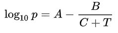
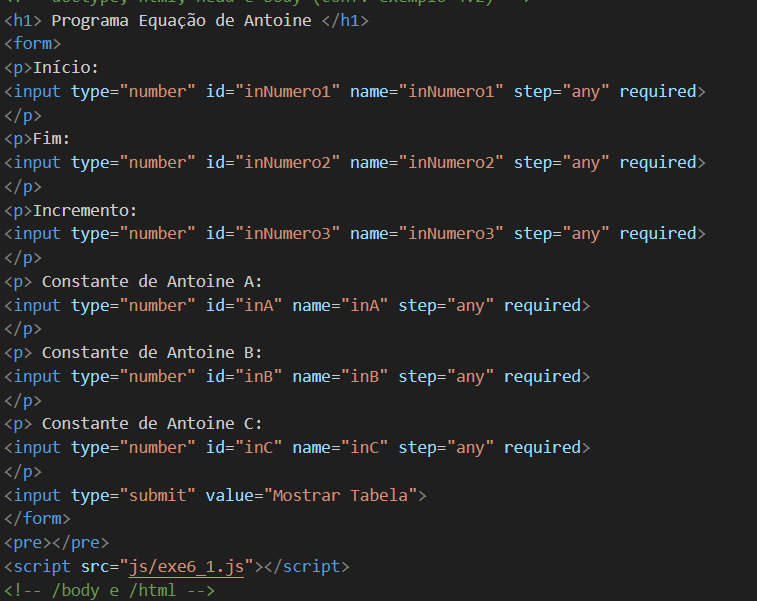
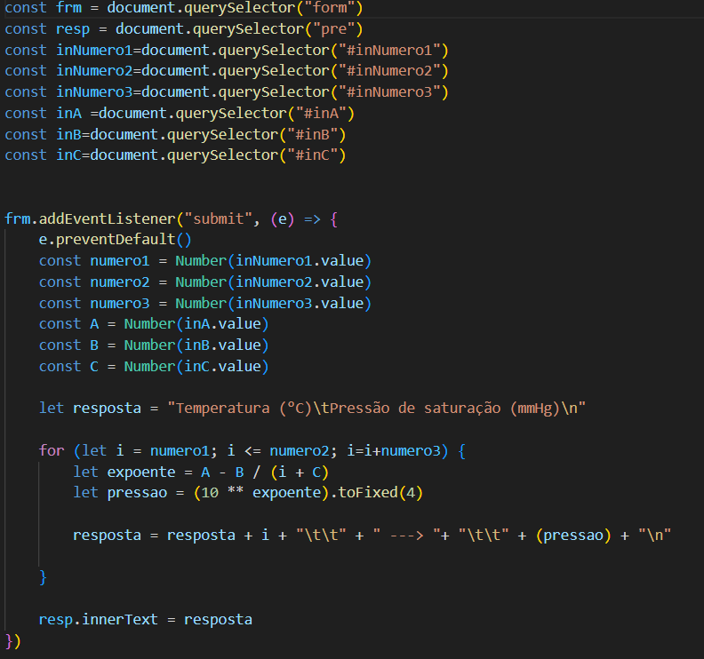

Em química e engenharia química, é bastante comum o uso de tabelas de propriedades termodinâmicas de substâncias puras e misturas. No Química Programada, já vimos exemplos de como extrair valores dessas tabelas a partir de uma variável de entrada — geralmente a temperatura — bem como realizar interpolações entre pontos tabulados.
Nesta postagem, propomos um exercício de sentido oposto: em vez de consultar uma tabela existente, vamos construir uma tabela de pressão de vapor utilizando JavaScript, a partir da equação de Antoine.
A equação de Antoine, apresentada a seguir, é uma correlação empírica que relaciona a temperatura de uma substância pura com sua pressão de vapor. Para cada substância, existe um conjunto específico de constantes A, B e C que, quando inseridas na equação juntamente com a temperatura, permitem o cálculo da pressão de vapor.

Em muitas aplicações práticas, mais do que trabalhar diretamente com equações, é conveniente dispor de tabelas de propriedades em função da temperatura ou de outra variável, facilitando análises, simulações e consultas rápidas. Dessa forma, o objetivo deste exercício é desenvolver uma aplicação capaz de gerar e exibir uma tabela de pressão de saturação com base na equação de Antoine.
Na Figura 2 é apresentado o formulário html para entrada de dados para os cálculos das pressões de vapor segundo equação de Antoine e construção da tabela. Primeiramente temos as entradas de temperatura que são : início, fim e incremento. Todos em graus celsius. São entradas de tipo "number", os identificadores são respectivamente inNumero1, inNumero2 e inNumero3. A configuração Step="any" permitem que a entrada seja inteiro ou tipo float. Depois temos as entradas dos parâmetros da Equação de Antoine A, B e C. Também são tipo number com a mesma configuração de entrada para inteiro e float.

Na Figura 3, temos o arquivo .js que deve ser associado ao formulário html. Inicialmente temos os comandos de leitura das variáveis do formulário html e transformação das mesmas em variáveis que serão maiúsculas dentro do arquivo .js. Depois disso, temos o evento associado ao botão "Mostrar Tabela" que calcula a pressão de vapor segundo a equação de Antoine para o trecho de temperatura escolhido. O laço for tem como ponto de início a variável chamada de numero1, como final a variável chamada numero2 e o incremento numero3. Por isso temos que os parâmetros do laço for são let i = numero1; i <= numero2; i=i+numero3.

Abaixo você pode usar esse formulário para construir sua própria tabela de pressão de vapor. A entrada de início, fim e incremento são em graus celsius e a saída é em mmHg.
Observação: as constantes A, B e C da equação de Antoine são válidas apenas para faixas específicas de temperatura e sistemas de unidades. O usuário deve garantir compatibilidade entre constantes, temperatura (°C) e unidade de pressão (mmHg).
Desenvolvimento : Química Programada